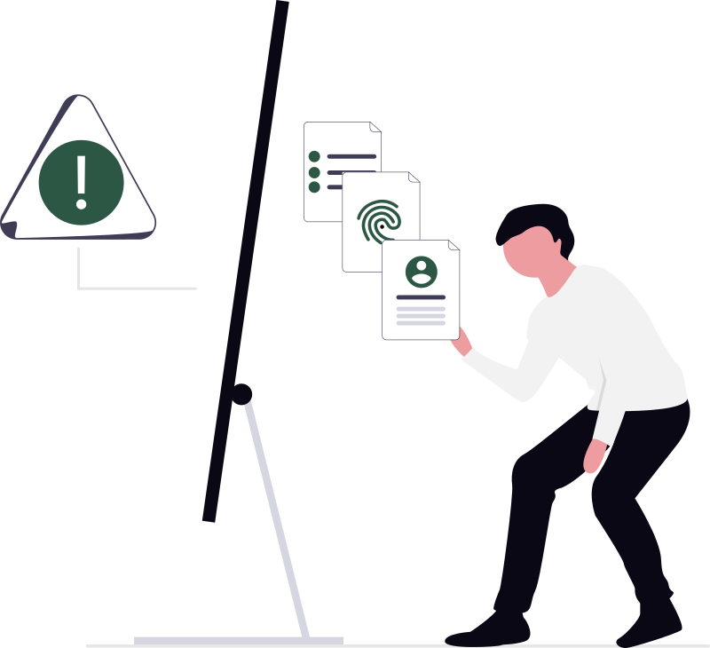

This week, Santander AI open-sourced their in-house AI stack. It is a significant release, but instead of covering the entire ecosystem, we are going to start with the most interesting piece: their GenFraud Graph solution. Source: github.com/SantanderAI/gen-fraud-graph.
Training graph neural networks to detect money laundering requires exposure to authentic financial transaction patterns. But financial institutions cannot legally expose real customer transaction data to the training process. This is not a policy inconvenience. It is a hard constraint imposed by privacy law, regulatory obligation, and the liability calculus of every compliance team that has read a regulatory brief. The result is a structural paradox at the core of AML machine learning: the data you need most is the data you are categorically forbidden to use.
Santander AI's GenFraud Graph (v0.1.0) is an open-source tool built around one answer to that paradox. Do not touch real data. Generate a mathematically grounded synthetic economy from scratch: constrained account balances, statistically realistic transaction flows, and hidden fraud cycles that encode the actual topological signature of money laundering. Then give graph databases and graph neural networks something genuinely hard to chew on. This post breaks down the engineering decisions that make that work.
Privacy-by-Design as an Architectural Requirement

Privacy-by-design in this context is not a compliance checkbox or a design philosophy. It is a hard engineering requirement that shapes every schema decision in the generator. If training data contains any reference to real customer records, even anonymized or aggregated, model memorization creates a re-identification risk. Courts have ruled against anonymization schemes repeatedly. Differential privacy mitigates but does not eliminate the risk. The only watertight solution is data that was never real.
This forces a specific architectural stance: the entire synthetic economy must be generated from probability distributions and graph topology rules, with no seed data derived from real transactions. GenFraud Graph takes this seriously. Every account node, every transaction edge, every fraud ring cycle is pure mathematics. The balance ranges, transaction amounts, and cycle hop depths are chosen to mimic statistical properties of real retail banking without containing any real banking data. The simulator encodes the physics of financial crime without exposing a single real customer.
The engineering consequence is that the generator must embed domain knowledge directly into its constraints. The distributions cannot be arbitrary; they must produce a synthetic economy realistic enough that models trained on it transfer to real-world inference. This is the same challenge faced by flight simulator engineers: the physics of the simulation must be faithful enough that skills transfer to real aircraft. Garbage distributions produce garbage models regardless of architecture.
Graph Schema: Constrained Distributions and the Null Hypothesis

The account node schema is minimal by design. Four attributes: a unique identifier, a synthetic name, a risk score constrained to [0.0, 1.0], and a baseline balance constrained to [$100, $100,000]. The transaction edge carries an amount constrained to [$10, $500] for legitimate flows, plus a memo string and an optional embedding vector.
The balance ceiling is not arbitrary. Anomaly detection models converge only when they have a well-defined null distribution to learn from. The null hypothesis in AML detection is: this account behaves like an ordinary retail banking customer. If the generator assigns unbounded wealth to synthetic accounts, the statistical baseline collapses. There is no normal. Gradient descent has nothing to anchor against.
The transaction range [$10, $500] enforces the same logic at the edge level. Everyday transactions are grocery runs, subscription renewals, split checks, utility payments. By locking legitimate transactions into a tight range of mundane financial life, the generator forces the model to process massive transaction volume without triggering false positives. The mundanity is the point. A model trained on this distribution learns to recognize significance only when deviations are material. Loose baselines cause gradient convergence problems precisely because the model cannot learn what to ignore.
Fraud Injection: The $9,999 Tracer Dye and Cycle Geometry

The fraud injection mechanism is where the engineering philosophy becomes most explicit. GenFraud Graph injects fraudulent patterns as directed cycles with a fixed hop depth of 4 to 7 intermediate connections, each carrying a fixed transaction amount of $9,999.
The fixed amount is intentional and worth understanding precisely, because it initially appears naive. In production inference, using $9,999 as a fraud marker would be trivially gamed. Launderers would simply avoid that amount. But GenFraud Graph is not a production classifier. It is a benchmarking tool for graph architecture. The $9,999 amount functions as tracer dye in a water system: a known contaminant injected at a known concentration so that the detection system can be evaluated purely on its ability to trace relational propagation, not dollar-amount pattern matching.
This is the correct engineering decision for benchmarking. When you want to measure the performance of a graph traversal engine or the message-passing depth of a GNN, you do not want the trivially-detectable signal to be confounded with the hard structural signal. Fix the amount. Force the network to learn the topology. The real-world AML relevance is incidental: $9,999 mirrors actual structuring behavior (smurfing transactions below the BSA $10,000 reporting threshold), which gives the synthetic data domain validity without making the model's job artificially easy.
The 4 to 7 hop cycle depth encodes the three-phase AML model directly into graph topology. Placement puts illicit funds into the financial system. Layering routes them through a web of intermediary accounts to obscure origin. Integration returns cleaned funds to the criminal's control. A directed cycle with 4 to 7 hops represents the layering phase: funds leave a placement account, traverse several intermediaries, and eventually return to a node controlled by the same actor. The cycle is the crime's actual protection mechanism. A straight chain is trivially traceable; the cycle creates topological ambiguity.
In a relational database, detecting a 7-hop cycle across millions of accounts requires seven nested recursive joins. The computational cost scales as O(n^k) in the naive case, where n is the number of accounts and k is the hop depth. At 10 million accounts and k=7, this is not a performance problem; it is a computational impossibility at query latency. Graph-native systems (Neo4j, TigerGraph, AWS Neptune, JanusGraph) store relationships as first-class entities. A 7-hop traversal is a native operation, not a derived computation from repeated joins. This is the architectural argument GenFraud Graph is designed to make empirically measurable.
Scale Architecture: Parallel Generation and Checkpoint Recovery

The scale factor parameter controls the size of the generated economy across three orders of magnitude. At scale 0.00001: 1,000 accounts, 9,000 transactions, 10 fraud rings, approximately 2 MB output. At scale 1.0: 10,000,000 accounts, 90,000,000 transactions, 1,000 fraud rings, approximately 20 GB output.
Generating 90 million interconnected edges with hidden cycles is a problem that does not yield to naive single-threaded generation. The core challenge is graph consistency: accounts cannot be generated in isolation because transactions reference relationships between them. You cannot parallelize naively by partitioning accounts into independent batches, because fraud rings span multiple account partitions. The cycle structure imposes global constraints on what would otherwise be embarrassingly parallel work.
GenFraud Graph addresses this with a parallel multi-process worker architecture. Workers operate on disjoint account ranges for the baseline economy (the legitimate transaction graph), which is the bulk of the computational work. Fraud ring injection runs in a separate coordinated pass that resolves the cross-partition cycle constraints. This mirrors the pattern used in distributed ETL pipelines and large-scale graph partitioning systems: near-linear scaling with available cores for the dominant workload, with a serialized final pass for the topologically constrained component.
The checkpoint and resume feature is non-negotiable at this scale. In distributed batch jobs, failures are not exceptional events; they are expected. A job that takes 6 hours on a multi-core workstation to generate a full-scale economy cannot restart from scratch every time it hits a memory pressure event or a machine restart. GenFraud Graph maintains checkpoint state at the account-batch level, so a resume operation skips already-completed work and picks up at the last checkpoint boundary. Without this, industrial-scale synthetic data generation is not operationally viable.
Semantic Context: Vector Embeddings and Multimodal Graph Features

Structural topology alone is insufficient for realistic AML model training. Real banking transactions carry natural language in the memo field. That text is not decorative; it is a signal channel that AML analysts actively use and that production fraud detectors must incorporate.
GenFraud Graph supports pluggable embedding providers. Transaction memos are converted to high-dimensional vectors (768 dimensions by default) using either local sentence-transformer models or the OpenAI embedding API, then serialized as pipe-separated float vectors in the output format. Each edge in the generated graph carries both a transaction amount and a semantic vector representation of its memo.
The value of embedding this context is most visible in how GNNs combine features. In message passing, each node's representation is updated by aggregating features from its neighbors. If edges carry only scalar amounts, message passing aggregates financial flow. When edges carry 768-dimensional semantic vectors, message passing aggregates semantic context across the neighborhood. A node receiving funds via memos labeled "offshore consulting fee," "wire facilitation," and "international trade logistics" builds a semantically coherent fraud representation through message aggregation. The same $9,999 arriving via memos labeled "rent payment," "grocery reimbursement," and "birthday gift" builds an incoherent one.
Semantic distance in embedding space is measurable via cosine similarity. "Monthly rent" and "lease payment" have high cosine similarity: vectors nearly parallel in 768-dimensional space. "Monthly rent" and "offshore consulting fee" have low cosine similarity: vectors nearly orthogonal. These distances are not metaphorical; they are computed quantities that propagate through the GNN's feature aggregation. Prior synthetic AML datasets were structurally simplistic or semantically shallow. GenFraud Graph unifies both dimensions into a single training corpus.
GNN Message Passing at Depth: Why 4 to 7 Hops Stresses Architecture
Graph neural network architectures are evaluated on their ability to aggregate information from multi-hop neighborhoods. Each GNN layer corresponds to one hop of message passing: a node at layer k receives aggregated representations from all nodes reachable in k steps. Stacking 7 layers allows each node's representation to incorporate information from its entire 7-hop neighborhood.
This creates a specific architectural stress test. In a sparse graph with 10 million nodes and 90 million edges, the 7-hop neighborhood of a central fraud-ring node can encompass millions of other nodes. Naive full-neighborhood aggregation at this depth is computationally intractable. Production GNN systems handle this via neighborhood sampling (GraphSAGE), attention mechanisms that weight neighbors selectively (Graph Attention Networks), or hierarchical graph pooling that compresses subgraph representations before propagation.
GenFraud Graph's fraud rings are designed to stress-test exactly this capacity. A 7-hop cycle buried in 90 million legitimate transactions is the canonical hard case: the signal exists at a specific topological depth, below which the fraud ring is invisible, and the architecture either reaches that depth or it does not. The generator does not make this easy. Fraud rings represent roughly 0.001% of transactions at scale 1.0 (1,000 rings in 90 million transactions). A model that cannot handle 7-hop message passing efficiently will either miss the signal entirely or exhaust memory attempting full-neighborhood aggregation.
The 4-hop floor is equally deliberate. Four hops is the minimum for a structurally non-trivial cycle that cannot be detected by simple triangulation or local density metrics. Fraud rings shorter than 4 hops are detectable by algorithms that do not require deep message passing; they would understate the architectural requirement. Four to seven hops is the realistic range of integration-phase laundering topology and the correct range for stressing message-passing depth without introducing unrealistic patterns.
Apache 2.0, Democratized AML Research, and Open Questions
The Apache 2.0 license on GenFraud Graph is a meaningful engineering decision, not just a legal formality. AML model development has historically been gatekept by data access. Large institutions with extensive real transaction histories have structural advantages in model training that smaller community banks, credit unions, and fintech startups cannot overcome. Access to realistic training data was a competitive moat.
A permissive open-source generator that produces statistically grounded synthetic data at 90 million edge scale removes that moat for benchmarking and initial model development. A university ML lab, a community bank's data team, or a startup building AML tooling can now generate a full-scale synthetic financial economy, train graph models against it, and validate architectural choices without touching a single real customer record. The compliance overhead drops to near zero.
The open questions the tool surfaces are more interesting than the tool itself. GenFraud Graph succeeds as a benchmarking instrument precisely because it does not attempt full realism. The $9,999 tracer and the fixed cycle geometry are deliberate simplifications that isolate the variables under test. A production AML system cannot rely on fixed amounts or predictable cycle depths; real launderers adapt. The gap between "realistic enough to train transferable models" and "realistic enough to fool adversarial actors" is the core open problem in synthetic financial data generation.
The deeper architectural question is about the trajectory of synthetic data as generative models improve. If future generators can produce synthetic economies that are statistically indistinguishable from real banking data at the distributional level, including realistic adversarial fraud patterns, do privacy-by-design guarantees hold? A generator that perfectly models real financial behavior encodes real financial behavior. The distinction between simulation and reality becomes definitional rather than substantive. GenFraud Graph sidesteps this by deliberately undershooting realism in the fraud signal. What happens when that deliberate undershot becomes technically unjustifiable?
GenFraud Graph is open source under Apache 2.0. Source: github.com/SantanderAI/gen-fraud-graph. Technical analysis derived from v0.1.0 documentation and podcast transcript.